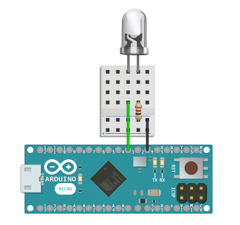

Control many lights and blink without delay using commands such as on(), off(), blink(), and fade(). Lights must be connected to PWM enabled Arduino pins to work with this library.

You can use this library without calling update() and most methods will function correctly. You must continuously call update() inside of loop() in order to use theReal-Time methods tagged below.

Create a new light and pass in the Arduino PWM pin number.
Turn on the light.
Turn off the light.
Pass in an integer between 0 - 255 to set the raw brightness of the light.
Pass in an integer between 0 - 100 to set the percentage brightness of the light. This is the same as setBrightness() except with a smaller input domain.
Returns true if the current light brightness is at 100%.
Returns true if the current light brightness is at 0%.
Returns an integer from 0 - 255 of the current light raw brightness.
Returns an integer from 0 - 100 of the current light percentage brightness. This is the same as getBrightness() except with a smaller output range.
Keep calculating brightness values over time. This must be called continuously within loop() in order to blink() or fade() the light.
Pass in unsigned longs for the on time and off time values in milliseconds. Pass in an integer for the last parameter for the number of times the light should blink, which is [optional] and can be left out to make the light repeat the blink cycle forever.
Pass in unsigned longs for the up, on, down, and off time values in milliseconds. Pass in an integer for the last parameter for the number of times the light should fade, which is [optional] and can be left out to make the light repeat the fade cycle forever.
Check your downloads folder and double-click the  Light.zip file.
Light.zip file.
Move the un-zipped contents of the  Light folder to the Arduino
Light folder to the Arduino  libraries folder:
libraries folder:


Upgrade to Arduino IDE v1.5 or greater and load the Example Sketch to get started.